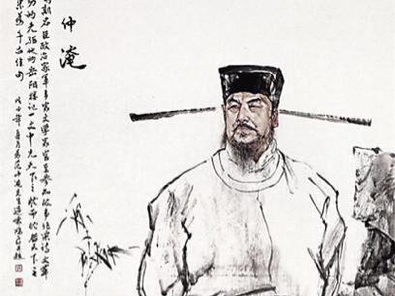
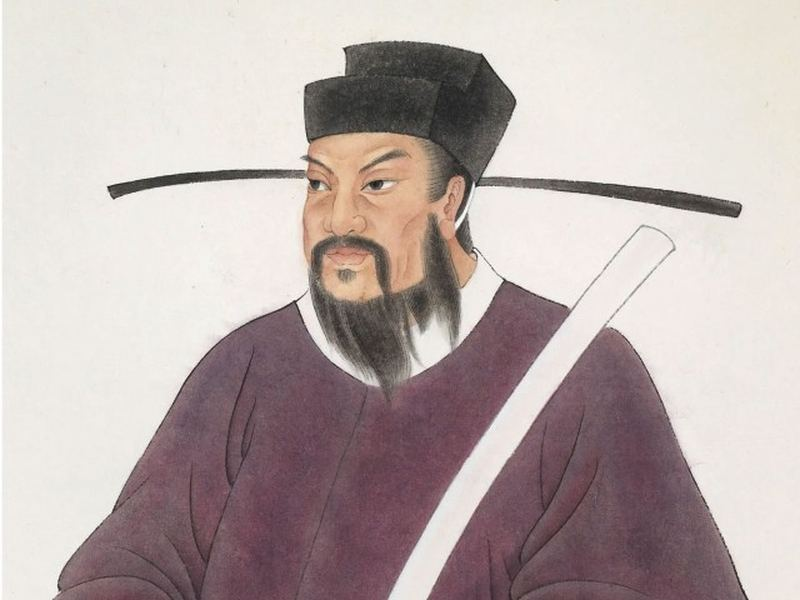
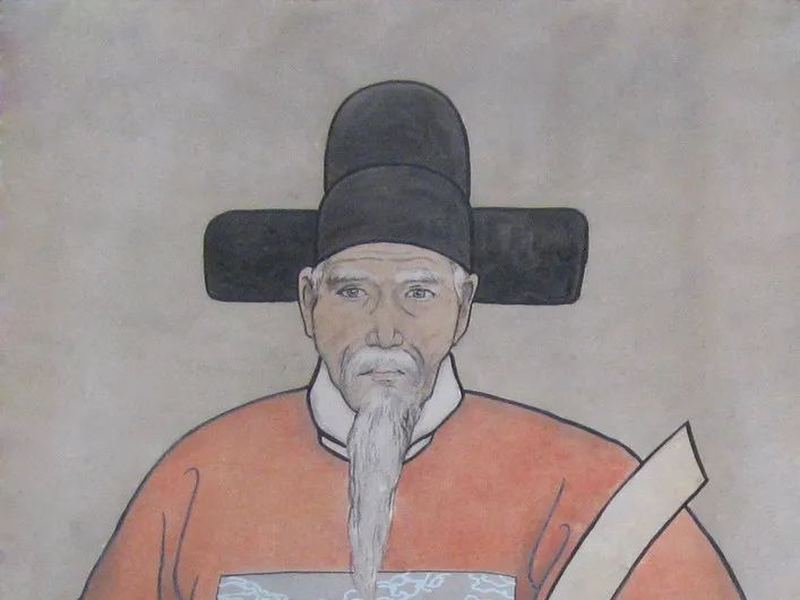
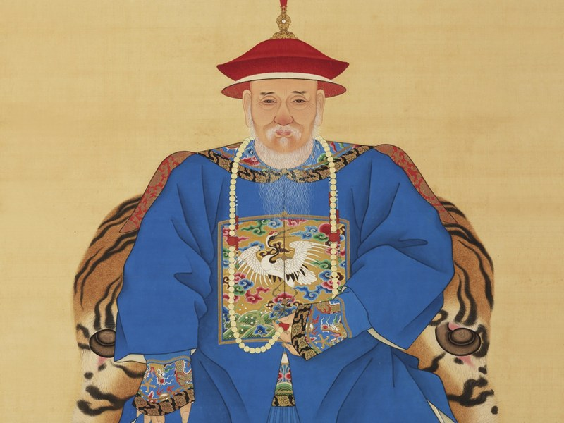
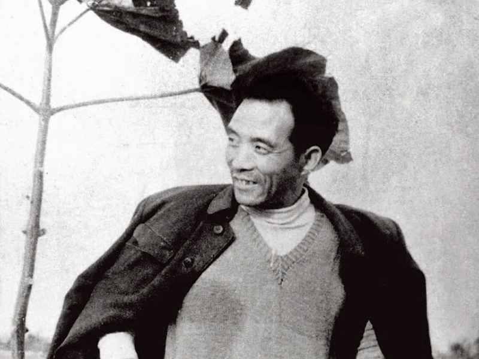
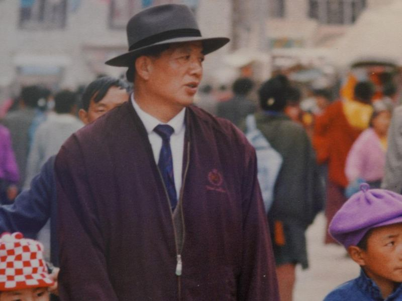
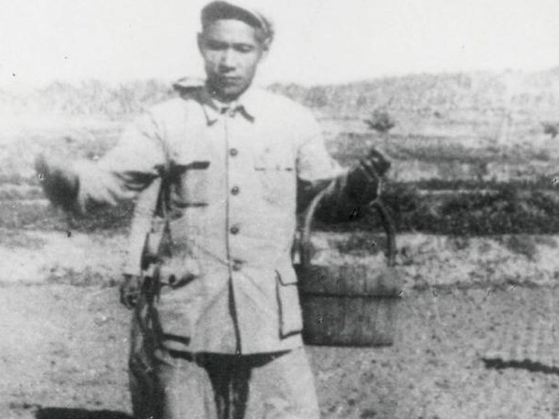
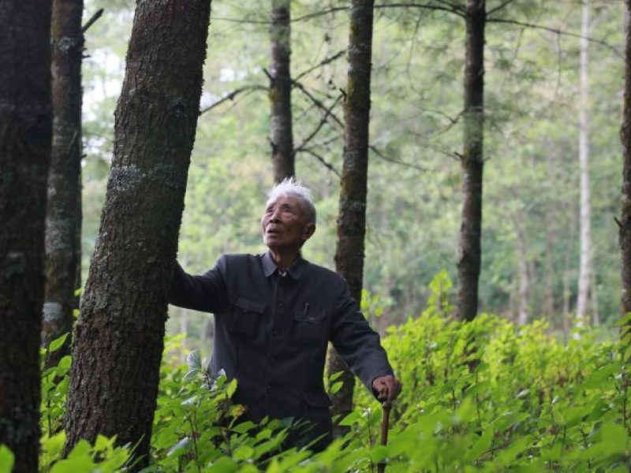

ROLE MODELS
廉洁人物事迹
古今廉吏与时代榜样以一身正气、两袖清风，为后人树立起崇廉尚洁的精神坐标。

范仲淹
北宋 · 忧乐天下
为官清廉自守，兴学赈灾、戍边安民；一句“先天下之忧而忧，后天下之乐而乐”传诵千年，身死之日家无余财，惟以清风留世。

包拯
北宋 · 清官典范
为官铁面无私、执法如山，不徇私情、不纳私请，断案公道清正，民间尊称“包青天”，成为后世秉公守廉的象征。

海瑞
明朝 · 清贫守节
一生秉公执法、严惩贪墨，生活简朴清贫，临终之时家无余财，以刚正不阿、廉洁自律为后世所敬仰。

于成龙
清初 · 天下廉吏第一
历任知县、总督二十余年，粗粝自奉、日食青菜，百姓称“于青菜”。康熙誉其为“天下廉吏第一”，身后遗物仅旧衣数件、盐米数斗。

焦裕禄
当代 · 县委书记榜样
在兰考带领群众治沙治涝，心中装着全体群众、唯独没有自己。艰苦奋斗、廉洁奉公，用生命践行了为民服务的初心。

孔繁森
当代 · 援藏干部
两次奔赴西藏工作，一腔热血奉献高原，生活节俭、克己奉公，把工资大部分用于资助藏族群众，以大爱与清廉永驻人心。

谷文昌
当代 · 荒岛播绿
任东山县委书记十四年，带领群众种木麻黄战风沙，立誓“不治服风沙，就让风沙把我埋掉”。离任只带走两瓶酸菜，家属从不搞特殊。

杨善洲
当代 · 草鞋书记
退休后扎根大亮山二十二年，种下五万六千亩林，成林后无偿上交国家。一生草鞋布衣，为群众办实事，不拿群众一分钱。